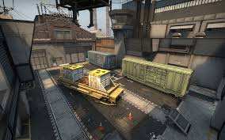

Mapas Oficiais de Counter-Strike 2
Aqui estão todos os mapas oficiais de CS2, separados entre os jogados em campeonatos e os não jogados no cenário competitivo.
Mapas Jogados em Campeonatos
- Dust II - Clássico e icônico.
- Mirage - Equilibrado entre ataque e defesa.
- Inferno - Estreitas passagens, excelente para táticas.
- Nuke - Mapa multi-níveis, altamente estratégico.

- Overpass - Verticalidade e ambiente urbano misto.
- Ancient - Recente, mas já parte do cenário competitivo.

- Vertigo - Enfatiza combate vertical, difícil de dominar.
Mapas Não Jogados em Campeonatos
- Train - Estratégico, mas atualmente fora do pool competitivo.
 - Cache - Amado pela comunidade, mas fora dos torneios.
- Office - Mapa casual, usado em modos mais descontraídos.